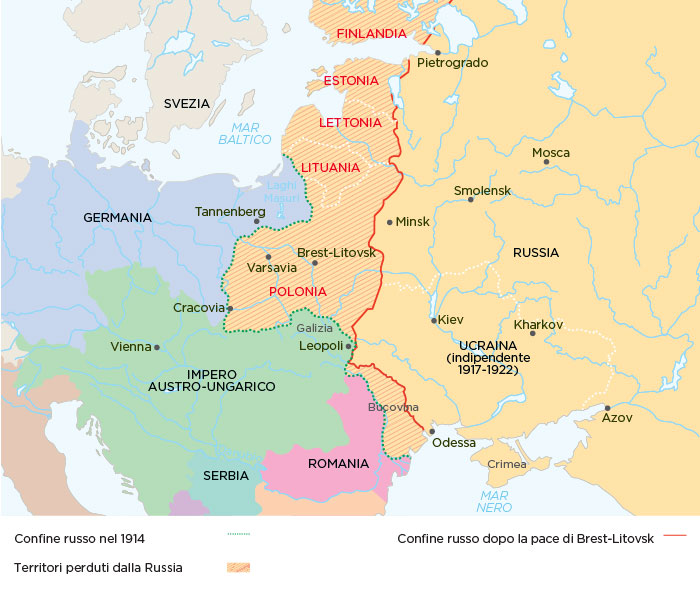

I presupposti sociali, economici e politici della Rivoluzione Russa
Quasi tutti gli Stati occidentali avevano conosciuto, durante l'Ottocento, l'affermazione della classe borghese e della politica liberale. Le monarchie che erano riuscite a conservarsi avevano concesso costituzioni, si erano fatte affiancare da assemblee legislative e parlamenti. L'assolutismo giaceva ormai nel passato degli Stati dell'Europa occidentale.
Lo stesso non poteva dirsi per la Russia, governata dall'ultimo zar, Nicola II (1894–1918), della dinastia Romanov. Nella Russia zarista l'antico regime non si era mai pienamente scardinato. Lo zar era un autocrate, sostenuto dall'aristocrazia. Ingredienti di qualsiasi Stato liberale — sindacati, scioperi, libertà di espressione — erano assenti. Lo Stato era attraversato da una forma estrema di nazionalismo che colpì tutte le etnie non russe e i gruppi di religione non ortodossa. Gli ebrei soffrirono particolarmente tale intolleranza, vittime dei pogrom.
Termine russo che significa letteralmente "distruzione violenta" o "demolizione violenta". Storicamente si riferisce agli episodi di intolleranza e violenza verso le popolazioni semitiche avvenuti in Russia tra Ottocento e Novecento. Il primo pogrom è fatto risalire al tumulto antiebraico di Odessa del 1821.
La Russia rimaneva uno Stato per lo più agricolo, in cui i kulaki (contadini benestanti) compravano le terre dei contadini più poveri. Sebbene lontana dagli standard britannici, francesi o tedeschi, conobbe anch'essa una significativa industrializzazione. Questa crescita non portò tuttavia benefici sociali diffusi: operai e contadini vivevano in condizioni di vita miserrime.
Nella Russia dei primi del Novecento, tutte queste contraddizioni e il malcontento generale trovarono espressione in due partiti principali:
Fondato nel 1902, di ispirazione anarco-populista e legato alle tradizioni agrarie. Credeva che dovessero essere i contadini a dare inizio alla rivoluzione in Russia. Il marxismo era estraneo a questo partito.
Fondato nel 1898 da Plechanov (1856–1918). A differenza dei socialisti rivoluzionari, individuava negli operai i veri attori della rivoluzione.
Il POSDR non era tuttavia unito. Al Congresso di Bruxelles del 1903 si formarono due correnti distinte e irreconciliabili:
Guidati da Lenin. Secondo loro, operai e contadini erano pronti a rovesciare l'autocrazia zarista e ad instaurare immediatamente un regime socialista.
Guidati da Martov. La rivoluzione doveva certamente compiersi, ma preceduta da una rivoluzione borghese — come era accaduto negli Stati occidentali.
A capo dei bolscevichi vi era Vladimir Il'ič Ul'janov, detto Lenin (1870–1924), un intellettuale formatosi nella dottrina di Marx che presto sviluppò una filosofia propria. Secondo Lenin, l'imperialismo non era che l'ultima fase del capitalismo — un capitalismo globalizzato, con lo spostamento dei capitali al di là dei confini nazionali, che poteva continuare ad esistere solo attraverso lo sfruttamento dei Paesi deboli da parte di quelli forti.
In questa situazione, la Russia si trovava in una condizione particolare: un paese fortemente arretrato che pur soffriva i mali sociali di un'industrializzazione galoppante, il tutto in un regime autoritario e illiberale come quello zarista. Queste contraddizioni avrebbero permesso alle classi contadina e operaia di unirsi per dare vita alla Rivoluzione.
La rivoluzione avrebbe dovuto essere suscitata dall'avanguardia del proletariato — il Partito, ossia rivoluzionari di professione — il cui ruolo sarebbe stato quello di guidare la rivoluzione contadina e proletaria, impedendole di ridursi a semplici azioni contro la classe economicamente dominante. Infine, la rivoluzione non doveva rimanere solo in Russia: si sarebbe dovuta diffondere in tutti i Paesi, secondo i principi dell'internazionalismo proletario.
Una prima rivoluzione si verificò nel 1905, anno in cui la Russia subì la sconfitta militare contro il Giappone, perdendo il controllo dell'Estremo Oriente. I fatti iniziarono a San Pietroburgo, dove gli operai svolgevano una vita pessima: undici ore di lavoro giornaliero, nessun giorno di pausa, nessun diritto di sciopero. A gennaio una folla pacifica, guidata dal prete ortodosso Georgij Gapon, si diresse verso il palazzo di Nicola II per presentare alcune richieste (giornata di 8 ore, aumento dei salari, libertà sindacale, Assemblea Costituente). La risposta fu la Guardia imperiale, che sparò sulla folla inerme: quel giorno passò alla storia come la Domenica di Sangue (22 gennaio 1905).
L'eccidio davanti al Palazzo d'Inverno incrinò profondamente la fiducia del popolo russo verso il monarca. Iniziarono scioperi e manifestazioni, e nacquero i Soviet (letteralmente "consigli") — assemblee di rappresentanti degli operai che divennero anche i centri dell'insurrezione armata. La rivoluzione non si compì tuttavia: i Soviet rimasero isolati e la massa contadina rimase per lo più estranea alle agitazioni.
Nicola II intraprese un percorso di riforme insufficienti e troppo timide che non scalfirono il potere dello zar. Le prime elezioni politiche per la Duma (1906) non portarono a un vero parlamento: ogni risoluzione era soggetta all'eventuale veto dello zar. La Duma era più simile agli Stati Generali pre-rivoluzionari francesi che a un parlamento nel senso di una monarchia parlamentare.
La Duma fu anzi sciolta quando le sue risoluzioni andavano nella direzione di una riforma agraria. Il Ministro degli Interni Stolypin cercò di riformare la situazione delle campagne svecchiandone i sistemi di gestione, ma fu assassinato nel 1911 da un rivoluzionario socialista — il punto di non ritorno per il regime zarista in Russia.
Prima del 1918, in Russia vigeva il calendario giuliano. In Europa occidentale vigeva invece il calendario gregoriano, così chiamato perché introdotto da papa Gregorio XIII nel 1582 con la bolla Inter Gravissimas. Il calendario giuliano-ortodosso era arretrato di 13 giorni rispetto a quello gregoriano: per questo motivo le date della Rivoluzione Russa sono normalmente riportate secondo il calendario giuliano.
Così la "Rivoluzione di Febbraio" è del 23 febbraio (giuliano) = 8 marzo (gregoriano); la "Rivoluzione d'Ottobre" è del 25 ottobre (giuliano) = 7 novembre (gregoriano). Il calendario gregoriano fu introdotto da Lenin nell'febbraio 1918.
Dalla Domenica di Sangue (1905) alla nascita dell'URSS (1922)
Luoghi chiave della Rivoluzione Russa e della Guerra Civile
Figure chiave della Rivoluzione — clicca su una scheda per saperne di più
I fondamenti teorici delle diverse forze rivoluzionarie — clicca per espandere
I principali schieramenti politici e militari della Rivoluzione Russa
Rossi contro Bianchi, 1918–1922
Tra il 1918 e il 1922 la Russia fu devastata da una guerra civile che oppose l'Armata Rossa (bolscevichi) all'Esercito Bianco (una coalizione eterogenea di monarchici, liberali, socialisti moderati e forze straniere di 14 paesi). La guerra causò milioni di vittime — tra combattimenti, terrore, carestia ed epidemie — e forgiò definitivamente il regime bolscevico come sistema a partito unico.
Posizione geografica: i Rossi controllarono il cuore della Russia (Mosca, Pietrogrado) con le sue industrie e ferrovie, potendo spostare rapidamente le truppe.
Organizzazione di Trotsky: la decisione di reclutare ex ufficiali zaristi come "specialisti militari" diede all'Armata Rossa competenze tattiche che i Bianchi non sapevano usare in modo coordinato.
Programma politico: il Decreto sulla Terra aveva già conquistato i contadini. I Bianchi non offrirono mai una proposta agraria convincente.
Terrore Rosso: la Čeka (polizia politica) represse spietatamente ogni opposizione interna.
Divisioni interne: i Bianchi non avevano un programma politico comune. Monarchici, liberali e socialisti moderati litigavano su tutto: forma di governo, questione agraria, autonomia delle nazionalità.
Questione agraria irrisolta: i contadini — la maggioranza della popolazione — preferirono i Rossi (che avevano dato loro la terra) ai Bianchi (che volevano restituirla ai latifondisti).
Brutalità delle truppe: pogrom anti-ebraici e saccheggi nelle aree controllate dai Bianchi alienarono le popolazioni civili.
Fronti disgiunti: Kolčak (Siberia), Denikin (sud), Wrangel (Crimea) e Judenič (nord-ovest) non si coordinarono mai efficacemente.

Per sopravvivere alla guerra civile, il governo bolscevico adottò misure economiche di emergenza note come comunismo di guerra: nazionalizzazione di tutta l'industria, obbligo di lavoro per tutti, soppressione del commercio privato, requisizione forzata del grano dai contadini (prodrazvërstka). L'obiettivo era concentrare tutte le risorse disponibili sullo sforzo bellico.
Il risultato fu catastrofico sul piano economico e sociale: la produzione industriale crollò, i contadini smisero di coltivare più del necessario sapendo che il surplus sarebbe stato confiscato, la carestia dilagò (1921–22: circa 5 milioni di morti). Il comunismo di guerra non era un modello ideologico scelto consapevolmente, ma una risposta di emergenza — che però generò l'illusione, in molti bolscevichi, che si potesse passare direttamente al comunismo senza fasi intermedie.
Letteralmente "requisizione del grano per quota". Le unità dell'Armata Rossa e i "comitati dei poveri" (kombedy) sequestrarono il grano dai villaggi, spesso con violenza. Chi resisteva veniva fucilato o deportato. La misura alienò profondamente i contadini — che pure avevano beneficiato del Decreto sulla Terra — e fu una delle cause della rivolta di Kronstadt.
Nel marzo 1919, mentre infuriava la guerra civile, Lenin fondò a Mosca la III Internazionale Comunista (Comintern). L'obiettivo era coordinare i partiti comunisti di tutto il mondo, applicando i principi leninisti di organizzazione e disciplina. A differenza della II Internazionale socialdemocratica (che si era spaccata con lo scoppio della guerra nel 1914), il Comintern era strutturato come un partito mondiale centralizzato, con i partiti nazionali come "sezioni" obbedenti alle direttive di Mosca.
Il Comintern si aspettava — e attivamente promosse — la rivoluzione in Europa: in Germania, in Ungheria (brevissima Repubblica Sovietica di Béla Kun, 1919), in Italia (biennio rosso 1919-20). Tutte fallirono. La speranza di Lenin che la rivoluzione si propagasse dall'Occidente industriale si rivelò infondata. Il Comintern rimase tuttavia uno strumento di controllo sovietico sui movimenti comunisti internazionali fino al 1943, quando Stalin lo sciolse come gesto di distensione verso gli Alleati.
Nel febbraio-marzo 1921 i marinai della base navale di Kronstadt (isola nel Golfo di Finlandia) si ribellarono al governo bolscevico. Erano stati definiti "il fiore e l'orgoglio della Rivoluzione" da Trotsky stesso — molti erano veterani del 1917. Presentarono un programma di rivendicazioni:
1. Elezioni libere ai Soviet con voto segreto (senza controllo bolscevico)
2. Libertà di parola e di stampa per tutti i partiti socialisti
3. Libertà di riunione per sindacati e organizzazioni contadine
4. Fine delle requisizioni di grano ai contadini
Il governo bolscevico definì la rivolta una "congiura controrivoluzionaria delle guardie bianche". Trotsky ordinò la repressione: l'Armata Rossa — in parte guidata da giovani cadetti militari usati come forza di élite — attraversò il ghiaccio del Golfo di Finlandia e attaccò la fortezza. Dopo dieci giorni di combattimenti (7–18 marzo 1921), Kronstadt fu conquistata. Circa 20.000 marinai avevano partecipato alla rivolta; i sopravvissuti furono fucilati, deportati o fuggirono in Finlandia. La rivolta segnò la fine del comunismo di guerra: pochi giorni dopo, Lenin annunciò la Nuova Politica Economica (NEP).
La NEP sostituì le requisizioni forzate con un'imposta sul grano (prodnalog), permettendo ai contadini di vendere il surplus sul mercato. Il commercio privato fu rilegalizzato; piccole imprese poterono tornare in mani private. Solo la "lista alta" dell'economia — industria pesante, banche, trasporti — rimase in mano allo Stato.
La NEP era, nelle parole di Lenin, "un passo indietro per prenderne due avanti": una ritirata tattica necessaria per ricostruire l'economia devastata. Funzionò: entro il 1925 la produzione agricola e industriale aveva raggiunto i livelli prebellici. Ma la NEP creò anche tensioni politiche interne — i bolscevichi la vissero come una sconfitta ideologica — e nuove disuguaglianze sociali (i nepman, i nuovi commercianti privati). Sarà abbandonata da Stalin nel 1928 con il primo Piano Quinquennale e la collettivizzazione forzata.
Fonti primarie, manifesti e atti del potere sovietico — clicca per leggere
30 dicembre 1922 — l'Unione delle Repubbliche Socialiste Sovietiche
L'URSS si espanse poi fino a 15 repubbliche. Finì il 25 dicembre 1991 con le dimissioni di Gorbaciov.